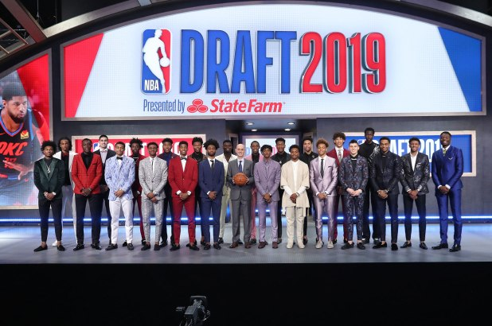

The NBA Draft allows teams that performed below expectations the past season to choose young top level talent coming from college. This is how NBA teams that are in the dump tend to rebuild themselves and become dynasties in the league. These young players look to join a team in the draft, as this is potentially what they make their living out of and they hope to shine on the top stage. This is the summer event that the whole world can witness who the next big superstar is going to be in the league.
This year, there were many once in a generation talents that were up for grabs in the draft in which include Zion Williamson, R.J Barrett and others. On the following list below, this shows the top 14 picks in the draft which is also known as the 'lottery round.' This also shows the team that they have been drafted to and what college they came from.
Images: Google Images
Images: Google Images
Zion is the perfect replacement for Anthony Davis since he departed to LA as he is able to become the new face of the franchise. He is athletic and very fun to watch which could get New Orleans riveting once again and have something to be hyped up for.
Images: Google Images
Ja Morant manages to be a good replacement for Mike Conley as the Grizzlies are in a rebuild. Ja is a very good player with all-star potential who could carry the franchise in the future
Images: Google Images
R.J. is obviously the best pick for the Knicks as they have been lacking a star scorer recently. He can manage to bring the uproar back to New York once again and become a future all-star.
Images: Google Images
Hunter was definitely drafted right in his spot and can definitely help a young Hawks squad rise through the league. He is a great defensive player with top shooting skills and could lead the Hawks to success for years to come.
Images: Google Images
Garland is the perfect complement for Sexton as he is able to be a selfless player whilst putting up his numbers. Even though he had an injury, he managed to make it in the lottery round.
Images: Google Images
Although Minnesota had many options to choose from, they chose Culver as he has proven to be a top shot-maker. It was a safe pick made and it seems to be that he is going to be a very solid player.
Images: Google Images
The Bulls were in desperate need of a playmaker and White is able to provide that with high speed abilities. He can lead the offense at a high quality and could be a potential franchise cornerstone for Chicago.
Images: Google Images
Although Hayes doesn't demonstrate a high level shooting ability, he manages to do everything else that is required of a big man. He has good height and a long wingspan, resulting in dunks and blocks for him every night.
Images: Google Images
Hachimura only started the sport a couple of years ago, but shows high potential. He is able to shoot the ball consistently and has a big wingspan. He steadily improves and is able to to fit in the league as a quality stretch-4.
Images: Google Images
Reddish at Duke always managed to disappear in most games as unfortunately he could not find his shooting touch. He couldn't get shots inside and just can't manage to reach his potential; but at this pick, there is still a chance for him to become a solid player.
Images: Google Images
It was a lucky time for Cameron Johnson as he managed to sneak into the lottery and no one expected him to be drafted this high. It seems to be that Phoenix aims for young talent, but they could've chosen someone better.
Images: Google Images
PJ Washington could have been a draftee last offseason, but wanted to improve and work on his game. He did that and he managed to improve his stock by improving his shot and knowing how to create space for himself. A solid pick by the Hornets who need big man shooters and PJ was the best one available.
Tyler Herro manages to excel in every offensive category as he can dribble, pass and shoot the ball all at a high quality. He even has good size and could potentially be known as a great shooter in the league. Many think that he is just a shooter, but he is just a top scorer who deserved this spot in the draft.
Images: Google Images
A bit surprising to see Langford drafted in the lottery, but the Celtics managed to draft him at 14. Unfortunately for him, he won't have much of an impact as Boston already has a huge pool of young talent. Potentially though, he could be a replacement for someone in the future and then prove himself in the NBA.
Return to the top of the page.